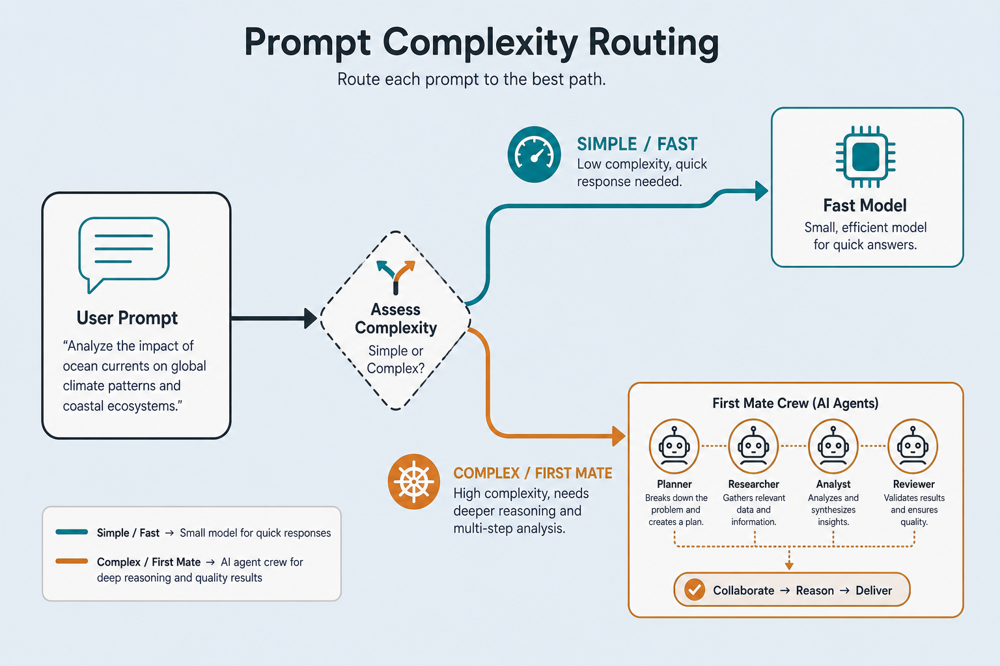

Demo · complexity-routerslides + app
Simple or complex?
Classifier routing — chọn đường nhẹ hoặc heavy crew / first-mate path.
01notes/05-demo-text.md
Flowrouting
Một nhánh quyết định
user query→
complexity→
simple → fast
/
complex → crew
fast path
Simple
Rule / small model / trả lời thẳng.
heavy path
Complex
Orchestrate agents · skills · agents.md (first mate).
02notes/07-agents.md
Picturefast vs crew
Hình minh họa

03slides/assets/complexity-router.png
Signalsheuristics
App đo độ phức tạp thế nào?
Length
Câu dài, nhiều mệnh đề.
Keywords
architect, migrate, multi-agent, refactor…
Multi-step
“và rồi”, “sau đó”, numbered steps.
Sau này thay heuristic bằng classifier đã train — UI giữ nguyên.
04swap-in trained router
05demos/complexity-router/app